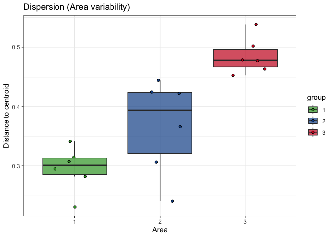
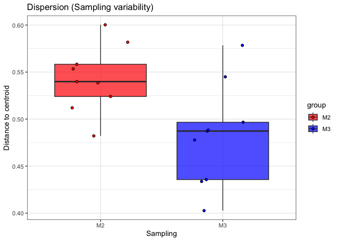

Organisation: Data Science Platform
Responsibles: Albert Pallejà Caro (apca@dtu.dk)
Alexander Zubov
(alzub@dtu.dk)
Edir Sebastian Vidal Casto
(s243564@student.dtu.dk)
Juliana Assis (jasge@dtu.dk)
This markdown is to calculate Bray-Curtis dissimilarities between samples based on species abundance and to plot these ones on the two first axis of a principal coordinate analysis (PCoA).
🔄 Beta Diversity: Bray-Curtis Dissimilarity & PCoA
Beta diversity measures differences in community composition between samples. It captures how similar or dissimilar samples are in terms of their species or taxa abundance.
📏 Bray-Curtis Dissimilarity
The Bray-Curtis dissimilarity is a widely used metric in ecology and microbiome analysis. It compares species abundances between two samples and ranges from 0 (identical composition) to 1 (completely different).
Where: - xi**k is the abundance of species k in sample i, - xj**k is the abundance of species k in sample j.
🧭 Principal Coordinates Analysis (PCoA)
To visualize the dissimilarity between samples, we use Principal Coordinates Analysis (PCoA). This method projects the dissimilarity matrix into a lower-dimensional space (typically 2D), allowing us to:
Explore patterns in microbial communities.
Identify clustering by experimental groups (e.g., treatment, timepoint).
Detect outliers in community composition.
🎯 Goal
Input: A table of species abundances per sample.
Step 1: Compute Bray-Curtis dissimilarity between all sample pairs.
Step 2: Perform PCoA on the distance matrix.
Output: A 2D scatter plot where:
Each symbol = a sample.
Distance between symbols = ecological dissimilarity.
Beta diversity tutorial#
R Packages that need to be installed#
library(dplyr)
library(ggplot2)
library(vegan)
Load data objects#
Load species abundance, taxonomical annotation and metadata file
# Abundance table
abundance <- readRDS(file = "../data/MetaphlanAbundance_Species.rds")
rownames(abundance) <- gsub("_SRR_db1.metaphlan", "", rownames(abundance))
# Taxonomical annotation
annotation <- readRDS(file = "../data/MetaphlanAnnotations_Species.rds")
# Metadata
metadata <- read.table(file = "../data/metadata.tsv",
header = TRUE, sep = "\t",
quote = "",
row.names = NULL)
rownames(metadata) <- metadata$Sample
# Take only samples with sequencing and metadata information
abundance <- abundance[rownames(metadata), ]
Permutational multivariate analysis of variance (PERMANOVA)#
PERMANOVA is a non-parametric method used to test whether the centroids of multivariate sample groups are significantly different based on a distance matrix. It is commonly applied in microbial community studies using Bray–Curtis or UniFrac distances.
This method is available via the adonis() function from the vegan
package.
When to use PERMANOVA?
PERMANOVA is useful for testing hypotheses like:
Do microbial communities differ significantly between sampling sites?
Is there a significant effect of treatment or time on overall community composition?
Unlike ANOVA, PERMANOVA does not require normality and can be applied directly to distance matrices derived from community data.
Before running a PERMANOVA test let’s assess the data dispersion within the areas and within sampling dates. High dispersion of data within the groups could affect the analysis of variance test as this test assumes homogeneity of variance
Dispersion for Area
Distance to centroid (dispersion)#
dispersion <- betadisper(d = bray_curtis,
group = metadata$Area,
type = "centroid",
bias.adjust = FALSE)
dispersion_table <- permutest(dispersion,
permutations = how(nperm = 1000),
by = "margin")
dispersion_table
##
## Permutation test for homogeneity of multivariate dispersions
## Permutation: free
## Number of permutations: 1000
##
## Response: Distances
## Df Sum Sq Mean Sq F N.Perm Pr(>F)
## Groups 2 0.110772 0.055386 18.988 1000 0.000999 ***
## Residuals 15 0.043753 0.002917
## ---
## Signif. codes: 0 '***' 0.001 '**' 0.01 '*' 0.05 '.' 0.1 ' ' 1
There is a significant dispersion of the data points among the areas
Dispersion boxplots#
dispersion_plot_data <- data.frame("distance" = dispersion$distances,
"group" = dispersion$group)
dispersion_box <- ggplot(dispersion_plot_data, aes(x = group,
y = distance)) +
geom_boxplot(aes(fill = group),
outliers = FALSE,
alpha = 0.7) +
geom_point(aes(fill = group),
shape = 21,
position = position_jitter(width = 0.25, height = 0)) +
theme_bw() +
scale_fill_manual(values = colors) +
labs(title = "Dispersion (Area variability)",
x = "Area",
y = "Distance to centroid")
dispersion_box

# Save it as a png
ggsave("../results/report/02_Beta-diversity/03_dispersion_plot.png",
width = 6, height = 4, dpi = 300)
Dispersion for Sampling#
Distance to centroid (dispersion)
dispersion <- betadisper(d = bray_curtis,
group = metadata$Sampling,
type = "centroid",
bias.adjust = FALSE)
dispersion_table <- permutest(dispersion,
permutations = how(nperm = 1000),
by = "margin")
dispersion_table
##
## Permutation test for homogeneity of multivariate dispersions
## Permutation: free
## Number of permutations: 1000
##
## Response: Distances
## Df Sum Sq Mean Sq F N.Perm Pr(>F)
## Groups 1 0.016488 0.0164884 7.6488 1000 0.01399 *
## Residuals 16 0.034491 0.0021557
## ---
## Signif. codes: 0 '***' 0.001 '**' 0.01 '*' 0.05 '.' 0.1 ' ' 1
There is a significant dispersion of the data points between the sampling dates
Dispersion boxplots#
dispersion_plot_data <- data.frame("distance" = dispersion$distances,
"group" = dispersion$group)
dispersion_box <- ggplot(dispersion_plot_data,
aes(x = group,
y = distance)) +
geom_boxplot(aes(fill = group),
outliers = FALSE,
alpha = 0.7) +
geom_point(aes(fill = group),
shape = 21,
position = position_jitter(width = 0.25, height = 0)) +
theme_bw() +
scale_fill_manual(values = c("red", "blue")) +
labs(title = "Dispersion (Sampling variability)",
x = "Sampling",
y = "Distance to centroid")
dispersion_box

# Save it as a png
ggsave("../results/report/02_Beta-diversity/04_dispersion_plot_sampling.png",
width = 5, height = 4, dpi = 300)
PERMANOVA test#
A significant permutest from a betadisper object indicates that there are significant differences in dispersion among groups, which violates the assumption of homogeneity of variances required for PERMANOVA. You can still perform a PERMANOVA, but the results should be interpreted with caution, and you should consider additional analyses.
Differences among treatment groups - Can compositional differences among groups be explained by the area and sampling date?
set.seed(12)
independent_variables <- paste("Area",
"Sampling",
sep = "+")
form <- paste0("bray_curtis ~",
independent_variables) %>%
as.formula
adonis_table <- adonis2(form,
data = metadata,
permutations = 1000,
by = "margin")
write.csv(adonis_table,
file = "../results/report/02_Beta-diversity/05_Adonis_table.csv",
row.names = TRUE, quote = FALSE)
Both factors: area and sampling data significantly explain the compositional
variance among the samples. These results should be interpreted with caution
as there is significant differences in dispersion among the groups.
Printing all package versions (good practice to ensure reproducibility)#
## R version 4.3.1 (2023-06-16)
## Platform: aarch64-apple-darwin20 (64-bit)
## Running under: macOS 26.3.1
##
## Matrix products: default
## BLAS: /Library/Frameworks/R.framework/Versions/4.3-arm64/Resources/lib/libRblas.0.dylib
## LAPACK: /Library/Frameworks/R.framework/Versions/4.3-arm64/Resources/lib/libRlapack.dylib; LAPACK version 3.11.0
##
## locale:
## [1] C.UTF-8/C.UTF-8/C.UTF-8/C/C.UTF-8/C.UTF-8
##
## time zone: Europe/Copenhagen
## tzcode source: internal
##
## attached base packages:
## [1] stats graphics grDevices utils datasets methods base
##
## other attached packages:
## [1] vegan_2.6-8 lattice_0.22-6 permute_0.9-7 ggplot2_3.5.1 dplyr_1.1.4
##
## loaded via a namespace (and not attached):
## [1] Matrix_1.6-1.1 gtable_0.3.6 compiler_4.3.1 tidyselect_1.2.1
## [5] parallel_4.3.1 cluster_2.1.6 textshaping_0.4.0 systemfonts_1.1.0
## [9] splines_4.3.1 scales_1.3.0 yaml_2.3.10 fastmap_1.2.0
## [13] R6_2.5.1 labeling_0.4.3 generics_0.1.3 knitr_1.49
## [17] MASS_7.3-60 tibble_3.2.1 munsell_0.5.1 pillar_1.9.0
## [21] rlang_1.1.4 utf8_1.2.4 xfun_0.49 cli_3.6.3
## [25] withr_3.0.2 magrittr_2.0.3 mgcv_1.9-1 digest_0.6.37
## [29] grid_4.3.1 lifecycle_1.0.4 nlme_3.1-166 vctrs_0.6.5
## [33] evaluate_1.0.1 glue_1.8.0 farver_2.1.2 ragg_1.3.3
## [37] fansi_1.0.6 colorspace_2.1-1 rmarkdown_2.29 tools_4.3.1
## [41] pkgconfig_2.0.3 htmltools_0.5.8.1